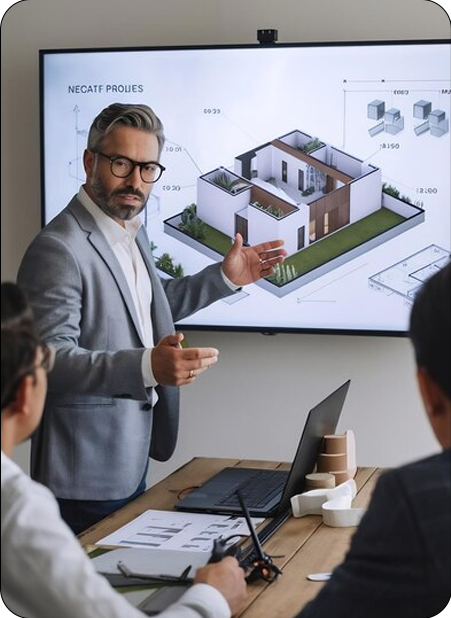
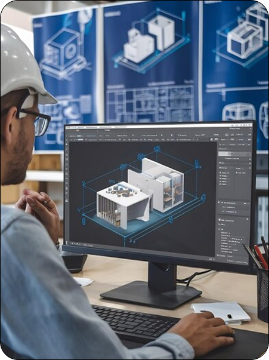

Gain expert-level skills in BIM coordination, clash detection, 4D construction simulation, 3D model review, real-time project collaboration, and interdisciplinary coordination workflows — the competencies that multinational construction and engineering firms demand most.

Navisworks is the industry-standard platform for BIM coordination, clash detection, and construction project review. Used by leading contractors, MEP engineers, and BIM managers worldwide, it enables teams to combine multi-discipline 3D models, identify design conflicts before construction begins, simulate project timelines, and collaborate seamlessly across disciplines. At CADPOINT, our comprehensive Navisworks training program takes you from the fundamentals through to advanced real-time project workflows — preparing you for a high-demand, well-paying career in the booming BIM industry.
Identify and resolve interdisciplinary model conflicts before site execution using Clash Detective.
Link project schedules with 3D models to visualise construction sequences using Timeliner.
Merge architectural, structural, and MEP models from multiple software platforms into one federated model.
Generate professional clash reports, review markups, and coordination issue logs for project stakeholders.
Navisworks expertise is among the most sought-after BIM skills globally — with demand surging across smart infrastructure, green buildings, and mega-construction projects.
Navisworks is mandated on BIM-level 2 and 3 projects worldwide. From the UAE to the UK and India, BIM coordinators are in urgent demand across all major construction markets.
BIM Coordinators and Navisworks Engineers command premium salaries starting from ₹4–6 LPA for freshers, rising to ₹15–25 LPA for experienced professionals in multinationals.
With governments mandating BIM adoption for public infrastructure projects, Navisworks professionals are central to smart city, metro, airport, and hospital construction programs.
An Navisworks certification significantly boosts your professional credibility and is actively recognised by consulting firms, EPC contractors, and BIM service providers globally.
Navisworks aggregates models from Revit, AutoCAD, Civil 3D, Tekla, and 50+ formats — making coordinators indispensable in multi-discipline project environments.
Professionals with Navisworks expertise transition into senior BIM roles, project management, and international consulting positions significantly faster than peers without BIM coordination skills.
Clash detection is the cornerstone of BIM coordination. Using Navisworks Clash Detective, you will learn to systematically identify and categorise hard clashes, soft clashes, and clearance clashes between architectural, structural, and MEP elements — enabling project teams to resolve thousands of design conflicts before a single brick is laid on site. Our training covers real-world clash workflows used on large-scale infrastructure and commercial building projects.
Eight integrated competencies you will master — the complete Navisworks coordination toolkit used on large-scale real-time projects.
Combine architectural, structural, and MEP models from Revit, AutoCAD, Tekla, and 50+ formats into a single federated Navisworks model for coordination.
Run systematic discipline-by-discipline clash tests using Clash Detective and categorise conflicts by severity, location, and responsible discipline.
Use Navisworks viewpoints, markups, and saved views to conduct structured BIM coordination meetings with architects, engineers, and contractors.
Link project schedules with model elements using Timeliner to simulate construction phasing, validate logic, and communicate sequencing plans visually.
Navigate federated models in real-time, create section cuts, measure distances, assign object properties, and annotate critical design areas.
Generate clash reports, coordination issue logs, viewpoint reports, and quantity take-off summaries for project documentation and stakeholder communication.
Integrate Navisworks with Construction Cloud and BIM 360 for cloud-based model coordination, real-time issue tracking, and team collaboration.
Use Navisworks Quantification to extract accurate quantity take-offs from BIM models for cost estimation, BOQ preparation, and construction planning.

Modern construction projects involve dozens of engineering disciplines, each working in specialised design software. Navisworks is uniquely capable of aggregating models from all these platforms — Revit, AutoCAD, Civil 3D, Tekla, IFC, and 50+ other formats — into a single, unified, federated model environment. This capability enables BIM coordinators to serve as the central integration hub for entire project teams, making the role both strategically and technically critical on any major project.
Twelve comprehensive modules designed by BIM industry professionals, covering everything from fundamentals to advanced real-time project coordination.
Navisworks professionals are in high demand globally. Here are the key roles available upon course completion with current salary benchmarks.
Coordinate multi-discipline BIM models, manage clash detection processes, and lead coordination meetings on large infrastructure projects.
Specialist role managing federated model setup, running Clash Detective tests, generating coordination reports, and maintaining the BIM coordination process.
Review submitted BIM models against employer information requirements, check model quality, and coordinate the RFI resolution process for construction contractors.
Dedicated role in large MEP and structural engineering consultancies managing multi-discipline clash detection, resolution tracking, and coordination documentation.
Manage construction sequencing, 4D simulation validation, site logistics planning, and coordination between design and construction teams on active building projects.
Senior role advising clients on BIM strategy, coordinating project delivery, managing BIM execution plans, and ensuring contractual BIM deliverables are met across projects.
L&T, Shapoorji, Tata Projects, Jacobs, Mott MacDonald, Arup and 200+ firms hire Navisworks professionals.
Get full guidance and preparation support for the Certified Professional (ACP) Navisworks examination.
Industry internship connections for students to gain live project experience during and after course completion.
Build a professional BIM coordination portfolio with real clash reports, 4D simulation videos, and coordination documentation.
A structured 6-step journey from enrolment to career placement — designed to maximise learning outcomes and professional readiness.
Register for the course, attend a free counselling session to understand the course structure, career paths, schedule options, and get your personalised learning plan. Receive your software access and course material kit on day one.
Master Navisworks fundamentals, BIM coordination principles, model navigation, file format management, and the essential tools of the Clash Detective, Timeliner, and Quantification modules with theory-to-practice sessions delivered by certified trainers.
Apply your learning through supervised coordination exercises — aggregating models, running clash tests, generating coordination reports, and building 4D simulations using training datasets derived from real project scenarios across commercial, residential, and infrastructure project types.
Work on five live industry-grade projects — a multi-storey commercial building, hospital MEP coordination, industrial facility, metro station structure, and a mixed-use development — building a comprehensive professional portfolio that demonstrates your BIM coordination expertise to employers.
Complete the CADPOINT Navisworks Professional Certificate assessment and receive full preparation support for the Certified Professional (ACP) examination. Our trainers provide mock tests, question banks, and one-on-one exam guidance to ensure you pass with confidence.
Receive dedicated placement preparation including resume building, LinkedIn profile optimisation, mock technical interviews, BIM portfolio review, and active job referrals to our network of 200+ hiring partners across engineering consultancies, EPC contractors, and BIM service providers.
Real stories from engineers who launched their infrastructure careers with CADPOINT.
I am currently learning AutoCAD at CADPOINT Marthandam and having a great experience. Divya mam's teaching is clear, friendly, and easy to understand. She patiently explains every concept and clears all doubts. The staff are also very supportive. After completing AutoCAD, I am looking forward to learning Revit here. Highly recommended!
I am studying AUTOCAD software at cad point marthandam. All staff are Knowledgeable person and good experience within the field above 5 years. So the lectures are teaching easy way to understand the class. Ex. They are teaching with the live example.
CADPOINT is a good training institute with a friendly learning environment and supportive trainers. Both my sister and I had a positive learning experience here. The teaching is clear, practical, and easy to understand. The fee structure is also reasonable and affordable for students. Overall, CADPOINT is a great place to develop skills and gain knowledge.
I had an excellent learning experience at CADPOINT Marthandam. The AutoCAD and Tekla courses were highly beneficial and helped me enhance my design skills and technical knowledge. The trainers were supportive, patient, and explained each concept clearly with practical examples. Currently I am working in a company based on design engineer role ...Tq CAD point marthandam and staffs ❤️
CAD Point provided me with a great learning experience. The classes were informative, the trainers were supportive, and the practical sessions helped me understand concepts better. The institute also encouraged skill development and boosted my confidence, making it an excellent place for learning and career growth.
The training centre provides a professional and student-friendly learning environment. The trainers are experienced, patient, and explain every topic in a simple way. The teaching methods are practical, interactive, and easy to understand. Regular guidance and individual attention helped me learn with confidence. Overall, it is an excellent place for students who want quality CAD training.
Join 2,500+ engineers who have launched high-paying BIM careers through CADPOINT's Navisworks program. The next batch fills fast — secure your seat now.